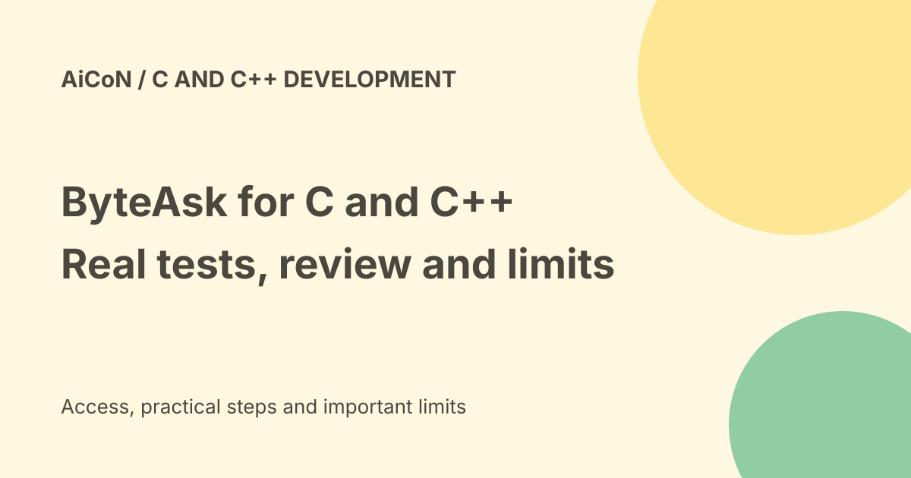

ByteAsk for C and C++: compiler checks, pricing and sandbox limits
ByteAsk is a coding agent for C and C++ that edits a repository and uses compilers, tests, sanitizers and debuggers before showing a diff for review. Its current pricing offers limited free access and paid plans. Passing the available tests is not proof of complete correctness, and the documented Linux sandbox fallback needs attention before running it on valuable code.

What does it do?
The official site describes terminal-based coding work with your build system, compiler flags and tests. It also describes joining a gdb session through a bridge you start.
A diff shows changed lines. gdb is a debugger. Sanitizers help find issues such as invalid memory access and some undefined behaviour. They can catch real bugs, but only within the tested paths and configured checks.
Who is it for?
ByteAsk focuses on C and C++ work such as systems, embedded software and performance-sensitive applications. Its Y Combinator page lists the company in the Fall 2026 batch.
The original post highlighted funding and an internal benchmark. Those are not a guarantee that the agent can safely change your firmware, trading system or medical device. This guide focuses on current product use rather than treating fundraising as a test result.
Supported platforms
The current overview lists Apple Silicon macOS, x86_64 and arm64 Linux, and native x86_64 Windows. It describes several installation routes and magic-link email sign-in.
No installer or account was used here. Review the package source and requirements before installation. Download-and-run shell instructions execute code on your machine, so inspect them rather than copying blindly.
Free access has limits
The pricing page lists a zero-dollar plan with about twenty-five managed agent tasks monthly. It lists full access with your own API keys for fourteen days and limits on debugging, memory checks and performance features.
Your own API key does not mean free provider usage. Model requests can still be billed by the provider. The page's unlimited labels for some features should be read with the plan's actual usage rules.
Pro: monthly versus annual
Pro is twenty dollars when billed monthly. The advertised sixteen-dollar monthly rate requires an annual subscription with one hundred and ninety-two dollars billed upfront.
At Wise's checked mid-market rate of ₹96.35 per dollar, those amounts are roughly ₹1,927 monthly or ₹18,499 upfront for the year. These are conversion estimates, not Indian checkout totals. Taxes, conversion fees and the final offer can change the bill.
Max and Ultra
The current pricing page lists Max at one hundred dollars monthly and Ultra at two hundred dollars monthly, approximately ₹9,635 and ₹19,270 at the same rate.
It describes managed usage as five times Pro for Max and ten times Pro for Ultra. A paid plan does not establish unlimited managed model spending. No subscription was started.
Documentation is less complete than pricing
The features page lists Free, Pro and Max, while the pricing page also lists Ultra and the annual Pro option. The pricing route is the more specific current offer.
The docs describe separate rolling five-hour and seven-day usage windows. Inspect actual account limits and reset times instead of assuming a simple unrestricted monthly allowance.
Extra credit and outside costs
The docs say account credit is used after plan budgets are exhausted. They also describe bring-your-own-key and self-hosted model routes.
Local model use can still cost hardware, energy and hosting money. The pricing page says companies with more than ten people need Team or Enterprise to use their own models. Confirm the organisation's terms before deployment.
Approval modes matter
The docs describe default on-request approvals, a more restrictive untrusted mode and a never-interrupt mode. The model's decision to ask is different from an enforced policy that requires review.
For an initial evaluation, keep restrictive approvals and review edits and commands. Do not disable approvals merely to make a demo faster.
Linux sandbox fallback
The features page says Linux uses bubblewrap for filesystem isolation, but falls back to full-access sandbox settings if bubblewrap is unavailable.
That is a material limit, not a safety recommendation. Verify that isolation is actually active before running on private or important files. Start in an expendable copy without secrets or production credentials.
A careful first evaluation
- Choose a small, low-risk repository copy.
- Verify installation source, platform and sandbox.
- Keep restrictive approvals.
- Choose a bug with a known reproduction.
- Review the proposed commands and diff.
- Run your independent tests and static checks.
- Test the target hardware when firmware is involved.
- Review licensing, privacy and costs.
- Merge only after normal code review.
No code, debugger, installer or paid model was operated for this guide.
What changed since the original post?
We add current plans, annual upfront billing, usage windows, organisation limits and the documented sandbox fallback. The agent's verification workflow is useful, but it does not replace independent engineering review.
Frequently asked questions
Does compilation prove correctness?
No. It proves the compiler accepted that build.
Is sixteen dollars a monthly payment?
No. That rate is tied to the annual upfront offer.
Was ByteAsk installed?
No.
Sources: Official product workflow · Platforms and setup overview · Current pricing and annual offer · Approval, sandbox and usage documentation · Y Combinator company record · Approximate USD conversion. Checked 7 October 2026.